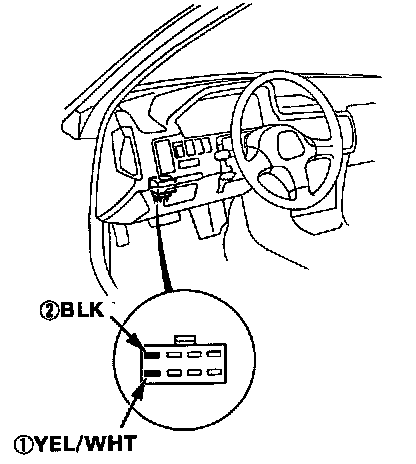
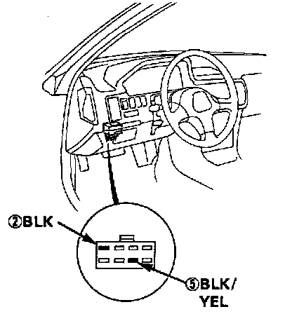
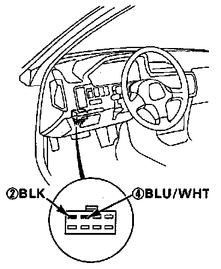
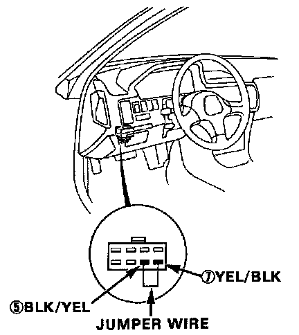

Main Relay Harness Test
Harness Testing1. Keep the ignition switch in the OFF position.
2. Disconnect the main relay connector.

3. Check for continuity between the BLK wire (2) in the connector and body ground.
4. Attach the positive probe of voltmeter to the YEL/WHT wire (1) and the negative probe to the BLK wire (2).
Battery voltage should be available.
- If there is no voltage, check the ECU fuse (underhood fuse box) and the wiring between the main relay and the ECU fuse (15A).

5. Attach the positive probe of voltmeter to the BLK/YEL wire (5) and the negative probe to the BLK wire (2).
6. Turn the ignition switch ON.
Battery voltage should be available.
- If there is no voltage, check:
No. 24 fuse and
the wiring from the ignition switch to the fuse box and
the wiring from the fuse box to the main relay.

7. Attach the positive probe of voltmeter to the BLU/WHT wire (4) and the negative probe to the BLK wire (2).
8. Turn the ignition switch to START position.
Approximately 10 volts should be available.
- If there is no voltage, check:
the No. 18(1OA) fuse and
the wiring between the ignition switch and fuse box and
from the fuse box to the main relay.

9. Connect a jumper wire between the BLK/YEL wire (5) and YEL/BLK wire (7).
10. Turn the ignition switch ON.
The fuel pump should work.
- If the fuel pump does not work, check:
the wiring between the main relay and fuel pump, and
the wiring from the fuel pump to the ground (BLK wire).